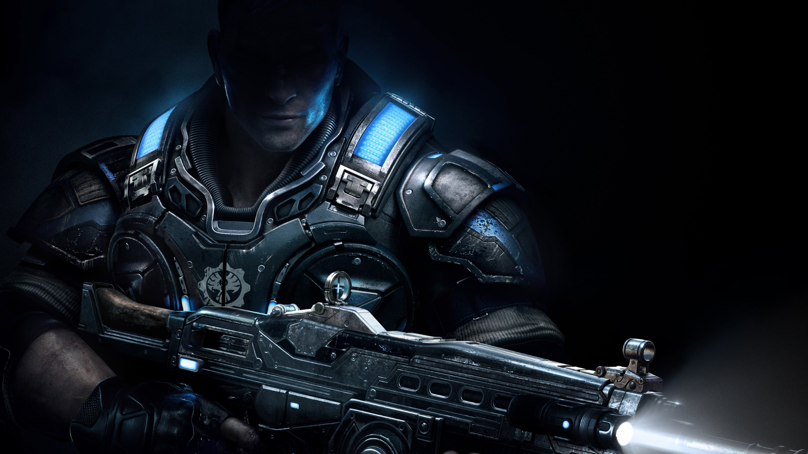
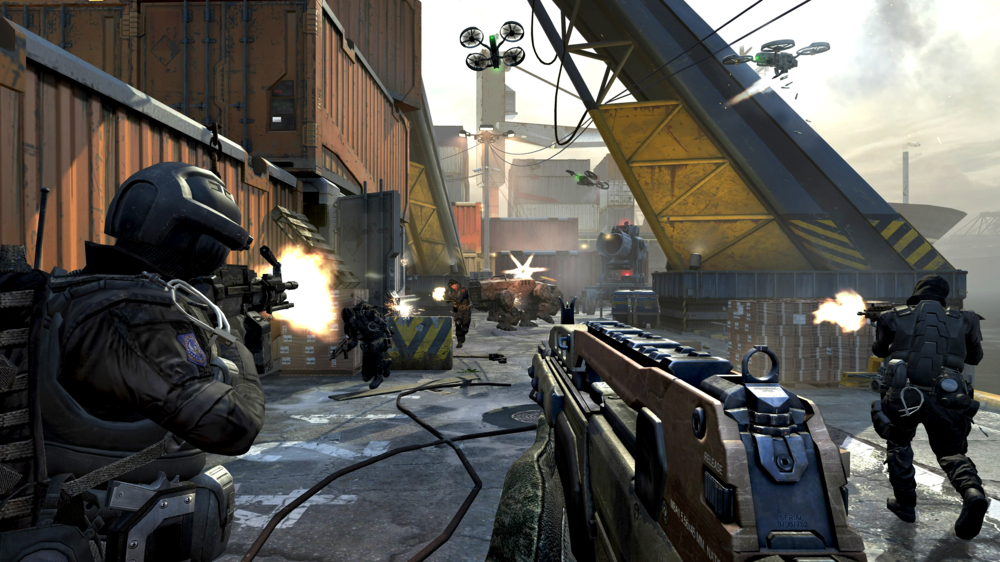
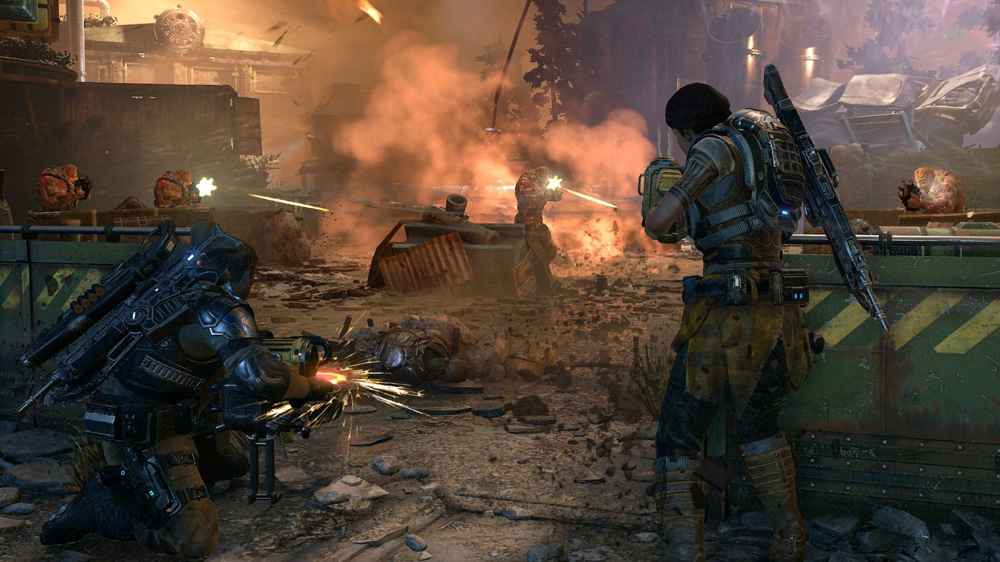
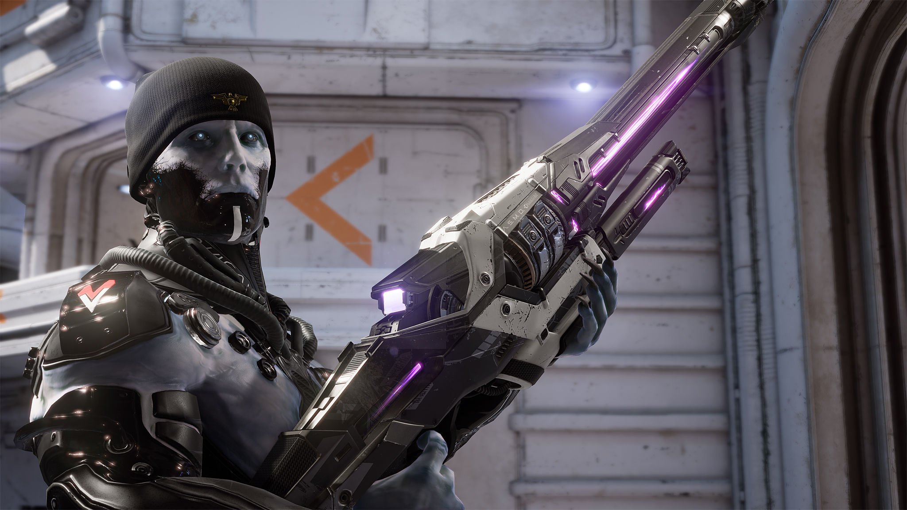
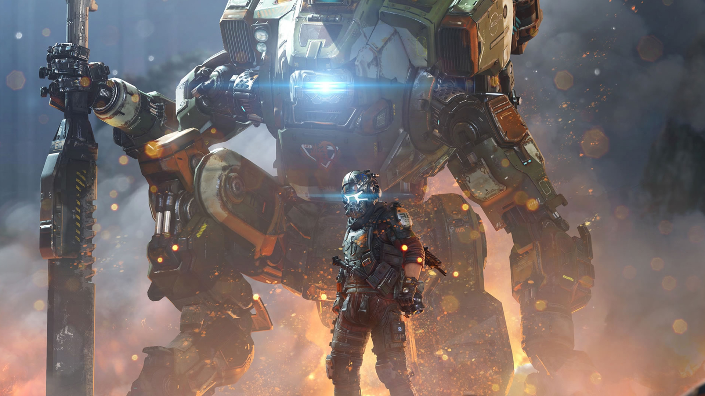
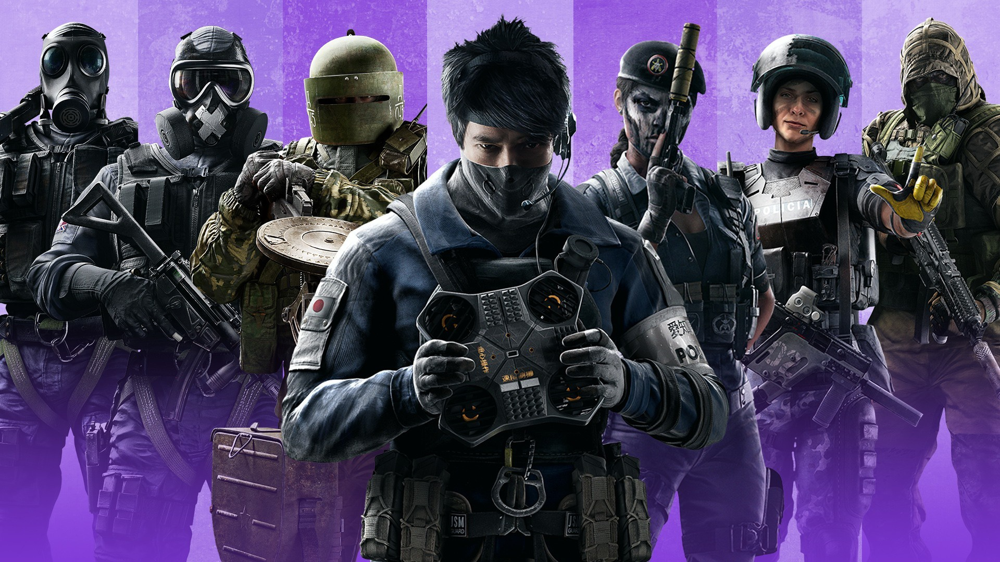
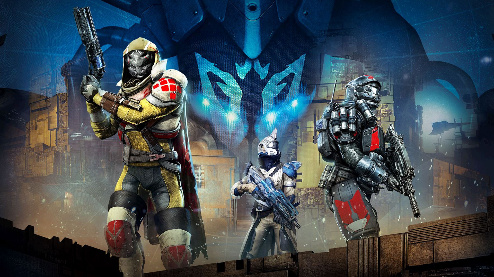

Shooter games
Shooter games are a subgenre of action video game, which often test the player's spatial awareness, reflexes, and speed in both isolated single player or networked multiplayer environments. Shooter games encompass many subgenres that have the commonality of focusing on the actions of the avatar engaging in combat with a weapon against both code-driven NPC enemies or other avatars controlled by other players.
Usually this weapon is a firearm or some other long-range weapon, and can be used in combination with other tools such as grenades for indirect offense, armor for additional defense, or accessories such as telescopic sights to modify the behavior of the weapons. A common resource found in many shooter games is ammunition, armor or health, or upgrades which augment the player character's weapons.
Most commonly, the purpose of a shooter game is to shoot opponents and proceed through missions without the player character being killed or dying as a result of the player's actions. A shooting game is a genre of video game where the focus is almost entirely on the defeat of the character's enemies using the weapons given to the player.
Usually this weapon is a firearm or some other long-range weapon, and can be used in combination with other tools such as grenades for indirect offense, armor for additional defense, or accessories such as telescopic sights to modify the behavior of the weapons. A common resource found in many shooter games is ammunition, armor or health, or upgrades which augment the player character's weapons.
Most commonly, the purpose of a shooter game is to shoot opponents and proceed through missions without the player character being killed or dying as a result of the player's actions. A shooting game is a genre of video game where the focus is almost entirely on the defeat of the character's enemies using the weapons given to the player.
First-person shooters
First-person shooters are characterized by an on-screen view that simulates the in-game character's point of view. While many rail shooters and light-gun shooters also use a first-person perspective, they are generally not included in this category. Notable examples of the genre include Doom, Quake, Half-Life, Counter-Strike, GoldenEye 007, Battlefield, Medal of Honor, Unreal, Call of Duty, Killzone, TimeSplitters, Team Fortress 2 and Halo.

Third-person shooters
Third-person shooters are characterized by a third-person camera view that fully displays the player character in his/her surroundings. Notable examples of the genre include the Tomb Raider series, Syphon Filter, Max Payne, SOCOM, Star Wars: Battlefront, Gears of War, and Splatoon. Third person shooter mechanics are often incorporated into open-world adventure and sandbox games, including the Elder Scrolls series and the Grand Theft Auto franchise.

Arena shooters
Arena shooters are multiplayer games that feature fast paced gameplay that emphasize quick speed and agile movement, and played out on levels or maps of limited size (the "arena"). Many of these are presented as first-person shooters, and thus Arena FPS may also be used to describe a subset of these games. Examples of these include the Quake and Unreal series, more specifically Quake III Arena and Unreal Tournament which first pioneered the genre. Arena shooters can also be played from other perspectives, such as via a top-down view in games like Robotron 2084 and Geometry Wars. Arena shooters frequently emphasize multiplayer modes with few or no single-player modes outside of practice matches with computer-controlled opponents. The genre hit its peak in popularity in the late 90s and early 2000s.

Hero shooters
Hero shooters are a variation of multiplayer first- or third-person arena-based shooters, where players, split among two or more teams, select from pre-designed "hero" characters that each possess unique attributes, skills, weapons, and other passive and active abilities; players may have the ability to customize the appearance of these characters, but these changes are usually cosmetic only and do not alter the game's balance or the behavior of the "hero".
Hero shooters strongly encourage teamwork between players on a team, guiding players to select effective combinations of hero characters and coordinate the use of hero abilities during a match. Hero shooters take many of their design elements both from older class-based shooters and multiplayer online battle arena games. The class-based shooter Team Fortress 2 is considered to be the codifier of the hero shooter genre. Popular hero shooters include Overwatch, Apex Legends, and Paladins: Champions of the Realm. Hero shooters have been considered to have strong potential as esports games as a large degree of skill and coordination arises from the importance of teamwork.
Hero shooters strongly encourage teamwork between players on a team, guiding players to select effective combinations of hero characters and coordinate the use of hero abilities during a match. Hero shooters take many of their design elements both from older class-based shooters and multiplayer online battle arena games. The class-based shooter Team Fortress 2 is considered to be the codifier of the hero shooter genre. Popular hero shooters include Overwatch, Apex Legends, and Paladins: Champions of the Realm. Hero shooters have been considered to have strong potential as esports games as a large degree of skill and coordination arises from the importance of teamwork.

Tactical shooters
Tactical shooters are shooters that generally simulate realistic squad-based or man-to-man skirmishes. Notable examples of the genre include Ubisoft's Tom Clancy's Rainbow Six and Ghost Recon series and Bohemia Software's Operation Flashpoint. A common feature of tactical shooters that is not present in many other shooters is the ability for the player character to lean out of cover, increasing the granularity of a player's movement and stance options to enhance the realism of the game.
Tactical shooters also commonly feature more extensive equipment management, more complex healing systems, and greater depth of simulation compared to other shooters. As a result of this, many tactical shooters are commonly played from the first person perspective. Tactical shooters may combine elements from other shooter genres, such as Rainbow Six Siege and Valorant, which combine the traditional tactical shooter style with the class-based gameplay of hero shooters..
Tactical shooters also commonly feature more extensive equipment management, more complex healing systems, and greater depth of simulation compared to other shooters. As a result of this, many tactical shooters are commonly played from the first person perspective. Tactical shooters may combine elements from other shooter genres, such as Rainbow Six Siege and Valorant, which combine the traditional tactical shooter style with the class-based gameplay of hero shooters..

Loot shooters
Loot shooters are shooter games where the player's overarching goal is the accumulation of loot; weapons, equipment, armor, accessories and resources. To achieve this players complete tasks framed as quests, missions or campaigns and are rewarded with better weapons, gear and accessories as a result, with the qualities, attributes and perks of such gear generated randomly following certain rarity scales (also known as loot tables).
The better gear allows players to take on more difficult missions with potentially more powerful rewards, forming the game's compulsion loop. Loot shooters are inspired by similar loot-based action role-playing games like Diablo. Examples of loot shooters include the Borderlands franchise, Warframe, Destiny and its sequel, Tom Clancy's The Division and its sequel, and Anthem.
The better gear allows players to take on more difficult missions with potentially more powerful rewards, forming the game's compulsion loop. Loot shooters are inspired by similar loot-based action role-playing games like Diablo. Examples of loot shooters include the Borderlands franchise, Warframe, Destiny and its sequel, Tom Clancy's The Division and its sequel, and Anthem.
